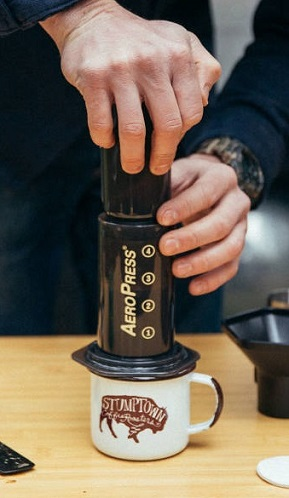

Aeropress
An Aeropress is great for people trying to make one, clean cup of coffee and also need some portability.

How to Brew
- Heat your water to 190 degrees. (Not boiling, since that will burn your grounds!)
- Measure out 18 grams of coffee beans.
- Put your filter in the aeropress' basket and wet it to remove the paper taste.
- Grind your beans to a medium-fine consistency using a burr grinder.
- Discard the water that you used to rinse your paper filter.
- Add your grounds to the brew chamber and pour enough water to reach the number 4 marking. (Spin your chamber while pouring to evenly saturate your grounds.)
- Stir the slurry and then place your plunger on the aeropress.
- After a minute and a half, stir the slurry again and then gently press the plunger down until you hear a hissing sound.
- Enjoy.